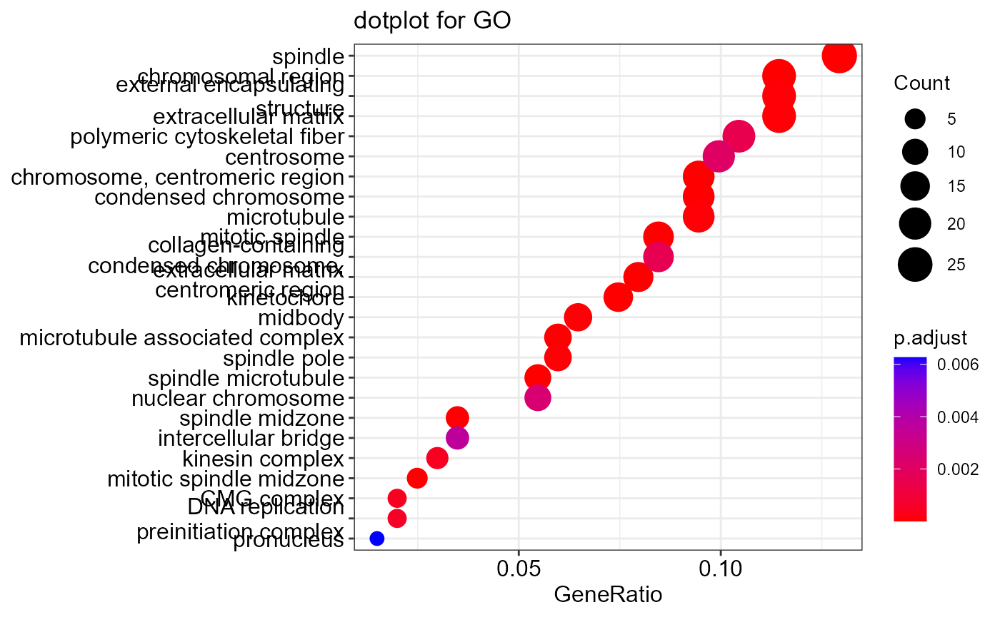

## ## clusterProfiler v4.6.0 For help: https://yulab-smu.top/biomedical-knowledge-mining-book/
##
## If you use clusterProfiler in published research, please cite:
## T Wu, E Hu, S Xu, M Chen, P Guo, Z Dai, T Feng, L Zhou, W Tang, L Zhan, X Fu, S Liu, X Bo, and G Yu. clusterProfiler 4.0: A universal enrichment tool for interpreting omics data. The Innovation. 2021, 2(3):100141##
## Attaching package: 'clusterProfiler'## The following object is masked from 'package:stats':
##
## filter
library(org.Hs.eg.db)## Loading required package: AnnotationDbi## Loading required package: stats4## Loading required package: BiocGenerics##
## Attaching package: 'BiocGenerics'## The following objects are masked from 'package:stats':
##
## IQR, mad, sd, var, xtabs## The following objects are masked from 'package:base':
##
## anyDuplicated, aperm, append, as.data.frame, basename, cbind,
## colnames, dirname, do.call, duplicated, eval, evalq, Filter, Find,
## get, grep, grepl, intersect, is.unsorted, lapply, Map, mapply,
## match, mget, order, paste, pmax, pmax.int, pmin, pmin.int,
## Position, rank, rbind, Reduce, rownames, sapply, setdiff, sort,
## table, tapply, union, unique, unsplit, which.max, which.min## Loading required package: Biobase## Welcome to Bioconductor
##
## Vignettes contain introductory material; view with
## 'browseVignettes()'. To cite Bioconductor, see
## 'citation("Biobase")', and for packages 'citation("pkgname")'.## Loading required package: IRanges## Loading required package: S4Vectors##
## Attaching package: 'S4Vectors'## The following object is masked from 'package:clusterProfiler':
##
## rename## The following objects are masked from 'package:base':
##
## expand.grid, I, unname##
## Attaching package: 'IRanges'## The following object is masked from 'package:clusterProfiler':
##
## slice## The following object is masked from 'package:grDevices':
##
## windows##
## Attaching package: 'AnnotationDbi'## The following object is masked from 'package:clusterProfiler':
##
## select##
library(ggplot2)
data(geneList, package="DOSE")
gene <- names(geneList)[abs(geneList) > 2]
gene.df <- bitr(gene, fromType = "ENTREZID",
toType = c("ENSEMBL", "SYMBOL"),
OrgDb = org.Hs.eg.db)## 'select()' returned 1:many mapping between keys and columns## Warning in bitr(gene, fromType = "ENTREZID", toType = c("ENSEMBL", "SYMBOL"), :
## 0.48% of input gene IDs are fail to map...
head(gene.df)## ENTREZID ENSEMBL SYMBOL
## 1 4312 ENSG00000196611 MMP1
## 2 8318 ENSG00000093009 CDC45
## 3 10874 ENSG00000109255 NMU
## 4 55143 ENSG00000134690 CDCA8
## 5 55388 ENSG00000065328 MCM10
## 6 991 ENSG00000117399 CDC20
ego <- enrichGO(gene = gene,
universe = names(geneList),
OrgDb = org.Hs.eg.db,
ont = "CC",
pAdjustMethod = "BH",
pvalueCutoff = 0.01,
qvalueCutoff = 0.05,
readable = TRUE)
head(ego)## ID Description GeneRatio
## GO:0005819 GO:0005819 spindle 26/201
## GO:0000775 GO:0000775 chromosome, centromeric region 19/201
## GO:0072686 GO:0072686 mitotic spindle 17/201
## GO:0000779 GO:0000779 condensed chromosome, centromeric region 16/201
## GO:0098687 GO:0098687 chromosomal region 23/201
## GO:0000793 GO:0000793 condensed chromosome 19/201
## BgRatio pvalue p.adjust qvalue
## GO:0005819 332/11884 6.308871e-11 1.886352e-08 1.713356e-08
## GO:0000775 188/11884 3.940180e-10 5.890568e-08 5.350349e-08
## GO:0072686 151/11884 6.423389e-10 6.401978e-08 5.814858e-08
## GO:0000779 138/11884 1.350430e-09 1.009446e-07 9.168708e-08
## GO:0098687 305/11884 1.819474e-09 1.088045e-07 9.882616e-08
## GO:0000793 210/11884 2.580005e-09 1.285703e-07 1.167792e-07
## geneID
## GO:0005819 CDCA8/CDC20/KIF23/CENPE/ASPM/DLGAP5/SKA1/NUSAP1/TPX2/TACC3/NEK2/CDK1/MAD2L1/KIF18A/BIRC5/KIF11/TRAT1/TTK/AURKB/PRC1/KIFC1/KIF18B/KIF20A/AURKA/CCNB1/KIF4A
## GO:0000775 CDCA8/CENPE/NDC80/TOP2A/HJURP/SKA1/NEK2/CENPM/CENPN/ERCC6L/MAD2L1/KIF18A/CDT1/BIRC5/EZH2/TTK/NCAPG/AURKB/CCNB1
## GO:0072686 KIF23/CENPE/ASPM/SKA1/NUSAP1/TPX2/TACC3/CDK1/MAD2L1/KIF18A/KIF11/TRAT1/AURKB/PRC1/KIFC1/KIF18B/AURKA
## GO:0000779 CENPE/NDC80/HJURP/SKA1/NEK2/CENPM/CENPN/ERCC6L/MAD2L1/KIF18A/CDT1/BIRC5/TTK/NCAPG/AURKB/CCNB1
## GO:0098687 CDCA8/CENPE/NDC80/TOP2A/HJURP/SKA1/NEK2/CENPM/RAD51AP1/CENPN/CDK1/ERCC6L/MAD2L1/KIF18A/CDT1/BIRC5/EZH2/TTK/NCAPG/AURKB/CHEK1/CCNB1/MCM5
## GO:0000793 CENPE/NDC80/TOP2A/NCAPH/HJURP/SKA1/NEK2/CENPM/CENPN/ERCC6L/MAD2L1/KIF18A/CDT1/BIRC5/TTK/NCAPG/AURKB/CHEK1/CCNB1
## Count
## GO:0005819 26
## GO:0000775 19
## GO:0072686 17
## GO:0000779 16
## GO:0098687 23
## GO:0000793 19